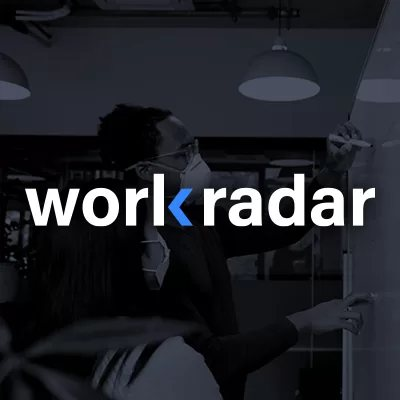
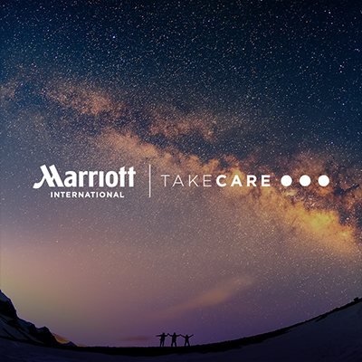
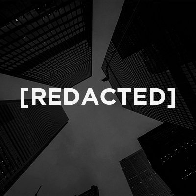
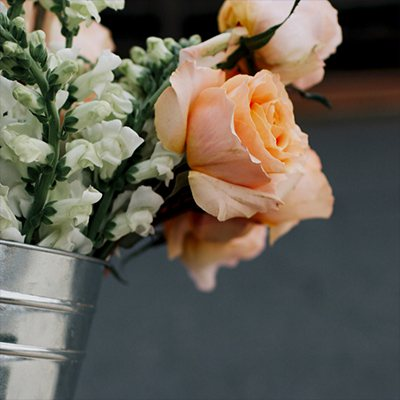
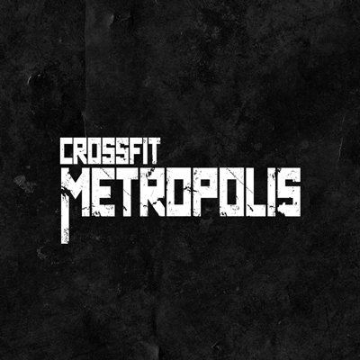
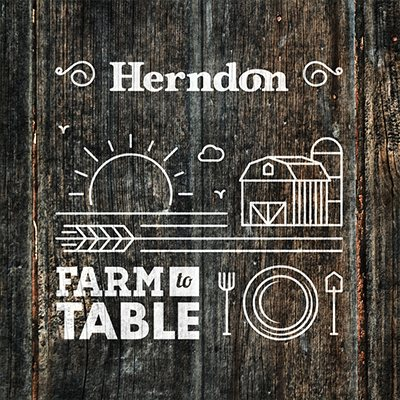
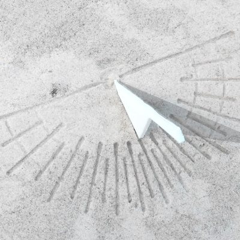
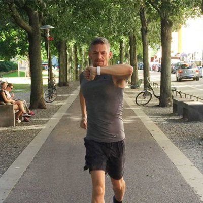
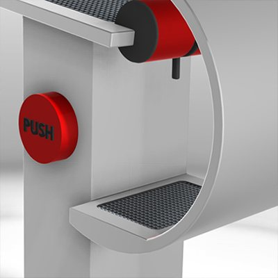
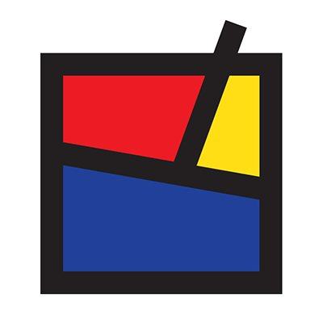

Work
Case studies in healthcare enrollment, public-sector tools, enterprise software and brand.
Featured
Enroll App
Health coverage enrollment, rebuilt mobile-first
Fill in: start year–present
- Image to addThumbnail
Vitae 27
One system for three state marketplace brands, built by directing an AI agent
Fill in: year started–present

WorkRadar
Daily check-ins for a safe return to the office
2020–2021

RegSearch
Federal procurement regulations, actually searchable
2016

TakeCare
A wellness brand for Marriott's global workforce
Fill in: year
- Image to addThumbnail
IdeaCrew Rebrand
Fill in: one-line description
2026

Product and UX

CDC Public Health Law
A usability review of cdc.gov's Public Health Law section
2020

Major CRE Firm
Folding debt transactions into an enterprise CRM
2019–2020

Earlier work

Pollen Productions
A subscription flower shop and brand photography
Fill in: year

CrossFit Metropolis
A simpler gym site for members and newcomers
2015

Extras
Logos, print and other side work
Various

SNOWATCH
A ski watch that fits over your jacket
Fill in: year

ERGO
A running watch you can read mid-stride
Fill in: year

London
A drinking fountain built for refilling bottles
Fill in: year

BEN
A De Stijl bench, from idea to build
2010